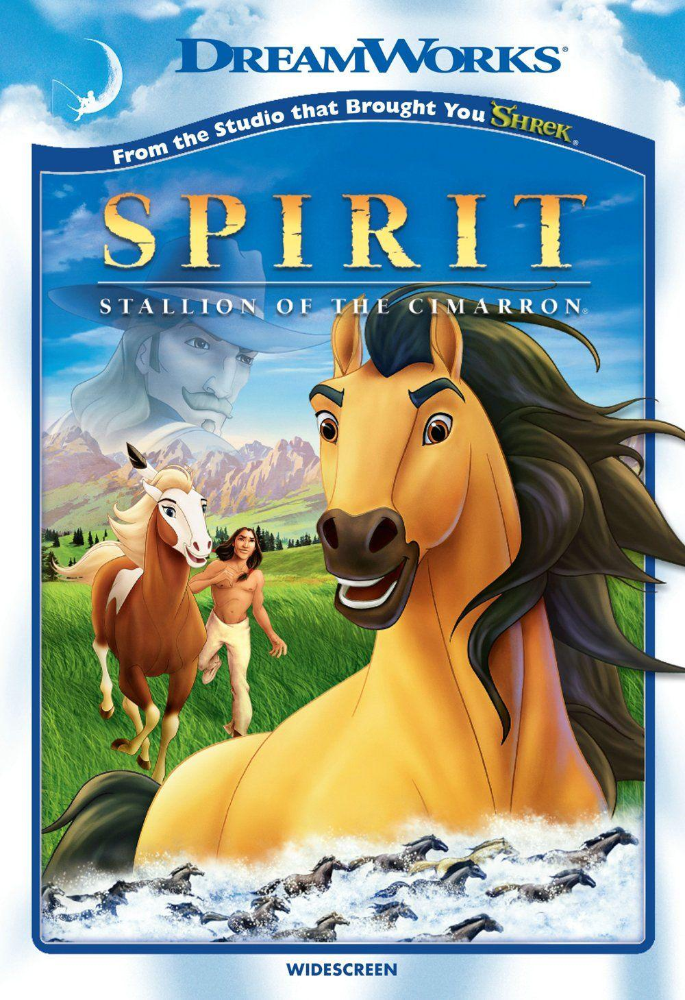

Welcome to my webpage dedicated to one of DreamWorks' most beloved animated films! Released in 2002, Spirit: Stallion of the Cimarron tells the breathtaking story of a wild Kora mustang stallion navigating the American frontier.

Image Source: Warner Bros. Pictures / Official Promotional Material
"Spirit: Stallion of the Cimarron" is a 2002 animated film from DreamWorks Animation that follows Spirit, a Kiger mustang stallion born into a wild herd. After being captured by U.S. Cavalry soldiers during the American Indian Wars, Spirit is taken to a cavalry fort where he resists being tamed by Colonel, a ruthless officer. Despite being tied to a post for three days without food or water, Spirit remains determined to return to his herd. He eventually escapes and is freed by a Lakota man named Little Creek, with whom he forms a bond. The film explores themes of freedom, courage, and the unbreakable bond between a horse and the land, showcasing Spirit's journey through the American West.
Spirit The titular Kiger mustang stallion, born free on the Cimarron plains. Spirit is proud, strong, and determined to maintain the freedom of his herd. His journey includes defying the US Cavalry, befriending Little Creek, and falling in love with Rain.
Rain A loyal and strong-willed American Paint Horse mare. She belongs to Little Creek and serves as Spirit’s love interest, bridging trust between the horse and humans.
Little Creek A young Lakota brave who befriends Spirit after both are captured by the US Cavalry. He respects Spirit’s nature and eventually helps him and Rain, emphasizing friendship and trust between humans and horses.
The Colonel The stern leader of the US Cavalry, serving as Spirit’s main antagonist. He embodies the human desire to tame the West and initially seeks to break Spirit, though he ultimately acknowledges Spirit’s indomitable spirit.
Sgt. Adams A cavalry sergeant who assists the Colonel and involved in trying to manage Spirit and other captured horses
Murphy A cavalry soldier responsible for shoeing, clipping, and branding the horses; also voiced as the Railroad Foreman later.
Since I was a kid, I liked it because of its powerful message about freedom, loyalty, and never letting anyone break your spirit. Even though the animals don't talk like in other cartoons, their emotions are shown so clearly through their actions and expressions. Combined with the breathtaking hand-drawn art style and the incredible music by Hans Zimmer and Bryan Adams, it has always been a masterpiece to me.
Critics and audiences also widely praised the film for its stunning traditional animation and unforgettable musical score.